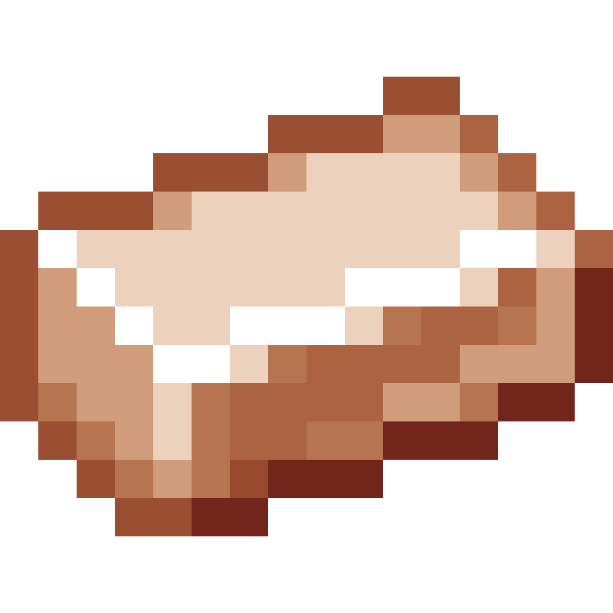

Pulver
Dynamic Dusts for Processing Ores into Ingots!
Features

Dynamically Generated Dust from this Copper Ingot:
Pulver adds Dusts that don't already exist for Ores that have a Corresponding Ingot
It does this solely using the Ore Dictionary. It checks to see if there exists some ore (for example, let's
use copper), such as copperOre. Then it checks to see if an ingot (copperIngot)
exists and makes sure that a dust (copperDust) does not exist. If an item satisfies
these conditions, then Pulver will create a new dust and use the center pixel value of the first ingot it
finds as an overlay color.
Ok, but why?
- Many Ore Processors (for example Extra Utils' crusher) use the ore dictionary to automatically add recipes - so this will bridge that gap.
-
If you add your own processing recipe via
XML/ CraftTweaker / Other, then you'll already have a dust item generated with the correct textures, OreDict names and more.